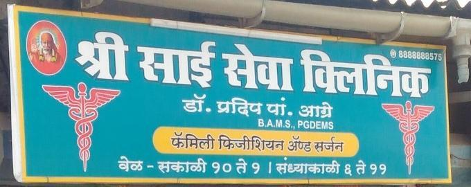

General check-ups
Routine check-ups to discuss your health and any concerns with the clinic.
Request a check-up ↗ Shri Sai SevaFAMILY PHYSICIAN & SURGEON
Shri Sai SevaFAMILY PHYSICIAN & SURGEONA family clinic offering medical consultation and an easy way to request an appointment. Explore the clinic details and get in touch to plan your visit.

Shri Sai Seva Clinic is presented here with the services and visit information shown in the field-project presentation.
Routine check-ups to discuss your health and any concerns with the clinic.
Request a check-up ↗Speak with the clinic about your health questions and care needs.
Request a consultation ↗General wellness guidance as part of the clinic’s family-care approach.
Send a visit request ↗The signboard lists morning hours from 10:00 am to 1:00 pm and evening hours from 6:00 pm to 11:00 pm. Call the clinic to confirm details before visiting.
Call 88888 88575 ↗Number shown on the clinic signboard
Evenings · 6:00 pm–11:00 pm
Call for directions and to confirm hours
Clinic website field project presented by Yash Patil · 45 hours · September 2026
Appointment requests and patient pages are educational demos. Requests are stored only in this browser and are not sent to the clinic.